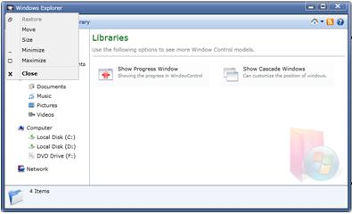

The Silverlight WindowControl is shipped with built-in System Menu. The System Menu can be opened by clicking the top left corner of the window.
Use Case Scenarios
By using the System Menu, you can maximize, minimize, restore, close, move and size the WindowControl.
Enabling System Menu to an Application
The System Menu support can be enabled in a WindowControl by setting the property IsSystemMenuEnabled to True. The default value of this property is True.
The following code snippet explains how to set this property in XAML.
|
[XAML] <syncfusion:WindowControl x:Class="SilverlightBrowserSample.SilverlightControl1"
|
The following code snippet explains how to use the property in C#.
|
[C#]
WindowControl window = new WindowControl();
|
The System Menu can also be enabled by using OpenSystemMenu().
The following code snippet explains the usage of this method.
|
[C#]
WindowControl window = new WindowControl();
|

Figure 1104: System Menu in Window Control
Tables for properties, methods, and events
Properties
Table 53: IsSystemMenuEnabled Table
|
Property |
Description |
Type |
Data Type |
Reference |
|
IsSystemMenuEnabled |
Gets or sets a value indicating whether the System Menu has been enabled or disabled in WindowControl. |
DependencyProperty |
Boolean |
IsSystemMenuEnabled |
Methods
Table 54: OpenSystemMenu Table
|
Method |
Description |
Parameters |
Type |
Return Type |
Reference |
|
OpenSystemMenu() |
Opens the System Menu. The Context Menu will be opened at the top left corner of the WindowControl. |
- |
- |
- |
OpenSystemMenu() |
Events
Table 55: SystemMenuOpening Table
|
Event |
Description |
Arguments |
Type |
Reference links |
|
SystemMenuOpening |
The event will be triggered before the System Menu gets opened. This is a cancellable event handler. |
Sender as object, SystemMenuOpeningEventArgs |
SystemMenuOpeningEventhandler |
Table 56: SystemMenuOpened Table
|
Event |
Description |
Arguments |
Type |
Reference links |
|
SystemMenuOpened |
The event will be triggered once after the System Menu gets opened. |
Sender as object, RoutedEventArgs |
RoutedEventHandler |
Sample Link
A sample application that illustrates System Menu Support in WindowControl is distributed along with the Essential Tools installation and can be found at:
<Samples installed location>\Syncfusion\EssentialStudio\Version Number\Silverlight\Syncfusion.Tools.Silverlight.Samples